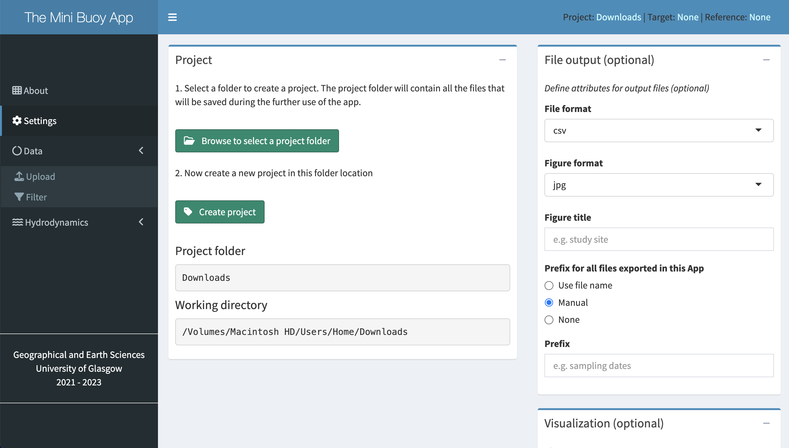

if(!require('shiny')) install.packages('shiny')
runGitHub(repo = 'MiniBuoy-App', user = 'Ale0430', launch.browser = T)6 Analysis
The Mini Buoy App is an open-source tool for reading and interpreting data gathered by any of the three Mini Buoy designs.
6.1 Installation
The Mini Buoy App is a Shiny application accessible directly through RStudio.
- Install R and RStudio here.
- Launch the App via GitHub, and install the
shinypackage if necessary:
6.2 Using the App
The Mini Buoy App is optimised to contrast hydrodynamic characteristics of intertidal environments at reference (e.g., established mangrove edge) and target (e.g., earmarked for mangrove planting) sites. As well as providing a comparison, hydrodynamic conditions of reference and target sites are reported separately. The App will function if only a single Mini Buoy dataset is used, albeit no comparison will be available. Reference and target sites can be used interchangeably.
This tutorial is based on the default reference and target dataset provided with the App.
6.2.1 Settings
Selecting a location to save outputs is optional. If not set, the App defaults to saving output in the same location that the App is running.
- Select
Settingsfrom the left-hand menu. - Select
Browse to select a project folder. - Navigate to a desired location to save output generated by the App. Root directories can be accessed by selecting the top-right drop-down menu (). Use the folder structure in the left-hand window to navigate to the desired location and click
Select. - Click
Create project. The working directory will now be displayed in theProjectwindow and at the top-right corner of the window.
Tip
Formats for exported data (.csv or .xlsx) and figures (.jpg, .pdf, or .rdata) can be chosen, and figure title, prefix, and theme can be chosen.

6.2.2 Upload data
Users have the option of uploading their own data, or using a default dataset supplied with the App. Once either is loaded, a summary table per dataset will be displayed. This table gives the user an initial quality control option to confirm whether the raw data is as expected (e.g., are the columns being identified correctly? is the duration of the survey as expected? is the amount of data as expected according to the sampling rate?).
- Select
DataandUploadfrom the left-hand menu. - Select the Mini Buoy design being used for Target and Reference sites. Options for uploading data will then appear.
- Select
Browse...and navigate to a desired dataset. Alternatively, check the ‘Use default B4+ data’ box(es) to use in the analysis. - Select
Use data. The file name will appear in the top-right corner if uploaded successfully.
Important
Please ensure the data has been exported from the Mini Buoy in the correct format (see Chapter 5).
6.2.3 Filter data (optional)
Users may wish to ‘clean’ the data before analysis to remove any spurious data (e.g., acceleration values for when the Mini Buoy was in transit to/from the deployment site). This can be done by filtering usable data between two datetimes. The raw data can also be plotted to aid in selecting appropriate start/end times.
- Select
DataandFilterfrom the left-hand menu. - Enter the start and end datetimes and select
Apply filterfor target and reference datasets as applicable. - Select
Render figureto view raw data. The filtered data will be displayed. See Troubleshooting to see how the raw data should look.
6.2.4 Hydrodynamics
Inundation, current velocity, and wave orbital velocity (if B4+ Mini Buoy is used) statistics are generated and presented automatically. Users are helped with interpreting the results via a text summary, tabulated data, and figure outputs. Users can interact with the figures and download a comprehensive tabulated data that includes the raw results. By modifying custom settings, users may seek to improve inundation status classification and thereby current/wave metrics should the default parameters be unsatisfactory.
- Select
HydrodynamicsandTargetorReferencefrom the left-hand menu, and wait for the App to analyse the data. Analysis is based on the default custom settings shown under theCustom settingsdrop-down window. - Inspect the summary text, table, and figures to assess the quality of the analysis, and amend the
Custom settingsif necessary (see Section 6.2.4.1). - Select
Download resultsandDownload plotsto save copies of the data and figures respectively. Further explanation of each below. - For a comparison between
TargetandReferencesites, selectComparisonfrom the left-hand menu. Analysis is based on the default custom settings as specified under theCustom settingsdrop-down window for bothTargetandReferencemenus.
Note
Given that only the B4+ Mini Buoy measures wave orbital velocity, no statistics for wave orbital velocity will be generated when other Mini Buoy designs are used.
6.2.4.1 Custom settings
Custom settings determine how the App cleans inundation classifications to achieve optimal results. Whilst the default settings are sufficient in most cases, some sites may experience unique tidal characteristics that require a tuning of the Custom settings. Having a reliable classification of inundation is necessary for the next step of calculating current and wave orbital velocities reliably. See TROUBLESHOOTING TBC for examples of what to look out for in the raw data that indicates the default settings may need changing. There are four parameters that users can tune:
- Minimum gap. Occasionally, the App will misclassify clusters of points during an inundation event as “non inundated”. This tends to happen during periods when there’s a strong, consistent current (a signal that can be indistinguishable from a Mini Buoy lying at rest). Slight wobbling in the Mini Buoy does allow the App to classify the majority of the inundation event correctly. For the cluster of points are are wrongly classified as “non-inundated”, the App will reclassify these according to the
Minimum gapargument, that says “any cluster shorter than this time window will be classified as fully inundated”. It is important that theMinimum gapargument is less than the time between inundation events - otherwise, the gap between two tides will be classed as “fully inundated”! - Search window. The start and end of each inundation event is initially classified as “fully inundated” by the App. Since a partially inundated Mini Buoy will give the same signal as one that’s fully submerged and being pushed by a strong current, it is important to distinguish between these. The App identifies partially inundated cases during flood tide by looking for the abrupt shift in a Mini Buoy moving from a horizontal position (~0°) to a near vertical one (near 90°) before any current may start pushing against it (moving towards 0° again). The reverse pattern applies for ebb tides. This is done by identifying the first and last timestamp of a given inundation event, and then searching for abrupt shifts before and after these points over a specified time window. The time window is defined by the
Search windowargument, which is a proportion of each inundation event. For example, a value of 25% means that the search window is quarter the length of a given inundation event. The middle of the search window is placed at the start and end of the event, so that 12.5% of the search window before and after are used in searching for abrupt shifts around the start and end of inundation events. The maximum amount of data that can be used is 50% (i.e., the full flood and ebb tide lengths). A longer search window will result in a more conservative classification, so that fully inundated cases may be classified as partially inundated. Shorter inundation windows may help capture peak flood/ebb tides, though also increases the probability of missing truly partially inundated cases. - Minimum duration. Some flooding events, especially nearer neap tides, may result in only very short periods of inundation. Taking current and wave orbital velocities from these events may be unwise, especially if the Mini Buoy is only just fully submerged.
Minimum durationsets the minimum duration of inundation that an event needs to be in order to be used in the analysis. Anything below this threshold is classified as partially inundated. - Minimum tilt. Some flooding events may be too shallow to raise the Mini Buoy to a fully upright position (90°) as would be expected during slack water. In such cases, current and wave orbital velocity values may be spurious.
Minimum tiltspecifies the minimum tilt that needs to be crossed per inundation event, otherwise the entire event is classified as partially inundated. Note, if a site is exposed to currents throughout the survey, the Mini Buoy may never reach 90°. This is why specifying a customMinimum tiltappropriate to the study area in question may help improve results.
Examples are given in the TROUBLESHOOT TBC chapter to help users identify where issues may be occurring and how to remedy them. It can be good practice to modify the Custom settings and see what effect that has on the results - which may be negligible.
6.2.4.2 Summary
The summary text provides a simple language overview of key results, to ascertain whether the site is generally suitable for the natural or managed establishment of coastal vegetation. Indications of whether the site is suitable for restoration are given, depending on the length of the survey, the type and symmetry of the tidal regime, duration of the longest inundation-free period (i.e., Window of Opportunity for seedling establishment), inundation frequency, exposure to current velocity, and exposure to wave orbital velocity (if the B4+ design is used). For example, a site may have low current and wave exposure (that suit restoration) but excessive inundation duration (that hamper restoration).